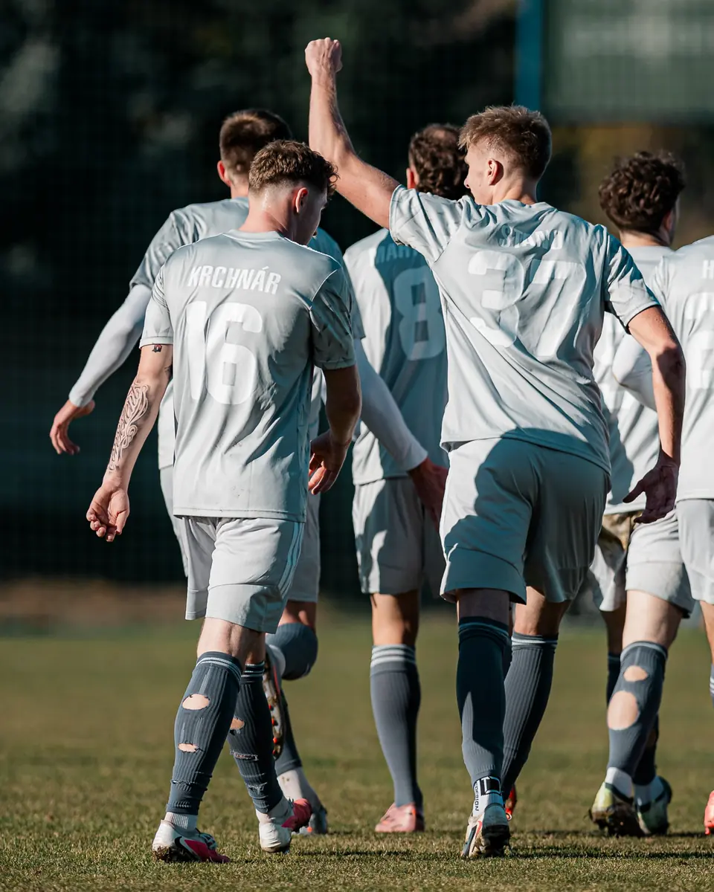

FC Pata – Slavoj Boleráz
A-mužstvo · IV. liga – Majstrovstvá regiónu · 1. kolo

IV. liga – Majstrovstvá regiónu 0–0
0–0 9. AUGUSTA 2026 | vonku
9. AUGUSTA 2026 | vonkuPriebeh
- 48′Žltá karta: Boris Juhás
- 65′Žltá karta: Kristián Paľo
- 73′Žltá karta: Daniel Martinka
- 90′Žltá karta: Matúš Pavlovčík
- Výkop
- nedeľa 9. augusta 2026, 17:00
- Ihrisko
- FC Pata
- Polčas
- 0:0
- Rozhodca
- Patrik Papuča
Zostavy
FC Pata
- 77Róbert Baláži
- 5Adrián Maron
- 19Jeremy Alexander Ramirez Palacios
- 6Diego Andres Montero Fuentes
- 4Kristián Paľo
- 8Adrián Zelenay
- 14Matúš Pavlovčík
- 18Matúš Loskot
- 9Vadym Ferentsyk
- 16Lukáš Herák C
- 10Pedro Henrique Damasceno De Assis
Náhradníci
- 3Samuel Ďuriš
- 12Vladimír Lomen
- 7Radovan Lipovský
- 13Roland Peseky
- 11Marko Pilo
- 2Matúš Pavlovič
- 15Lucas Etienne Kysucký
- 17Patrik Paulov
- 33Filip Vanček
Tréner: Lukáš Herák
Slavoj Boleráz
- 91Štefan Matejkovič
- 37Dušan Stano
- 5Denis Horník
- 3Boris Juhás
- 28Tomáš Hlavna
- 12Šimon Dibala
- 7Jakub Krč C
- 77Oliver Strečanský
- 19Sebastian Nagy
- 97Daniel Bogdalík
- 8Daniel Martinka
Náhradníci
- 1Bruno Ondruš
- 10Viktor Radványi
- 11Kristián Dadík
- 16Jakub Krchnár
- 17Peter Kozák
- 20Alex Karhan
- 27Viktor Bujzaš
- 55Adam Konečný
Tréner: Lukáš Vido